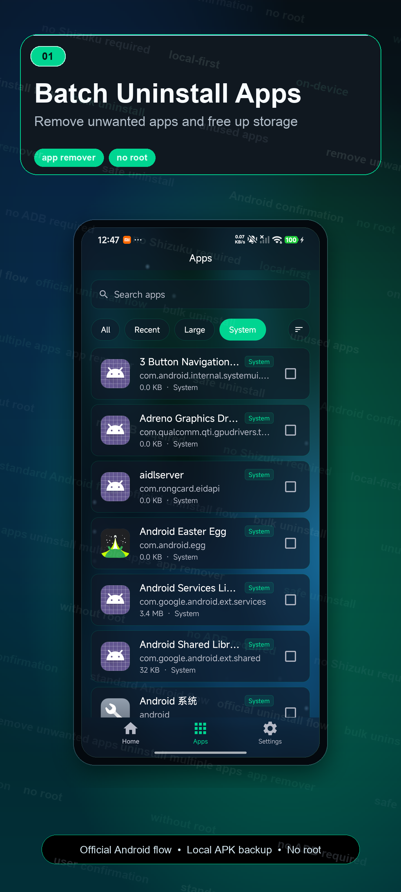
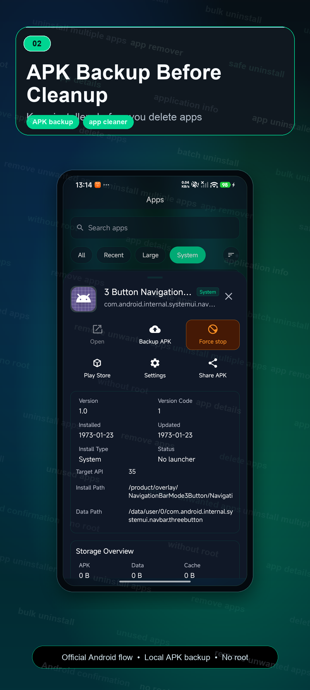
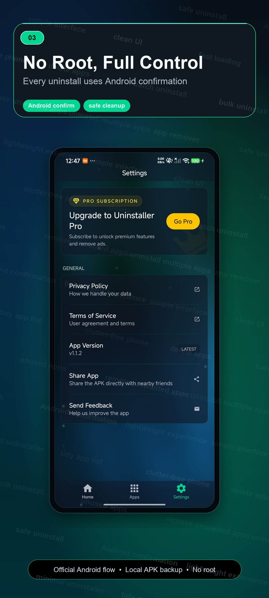
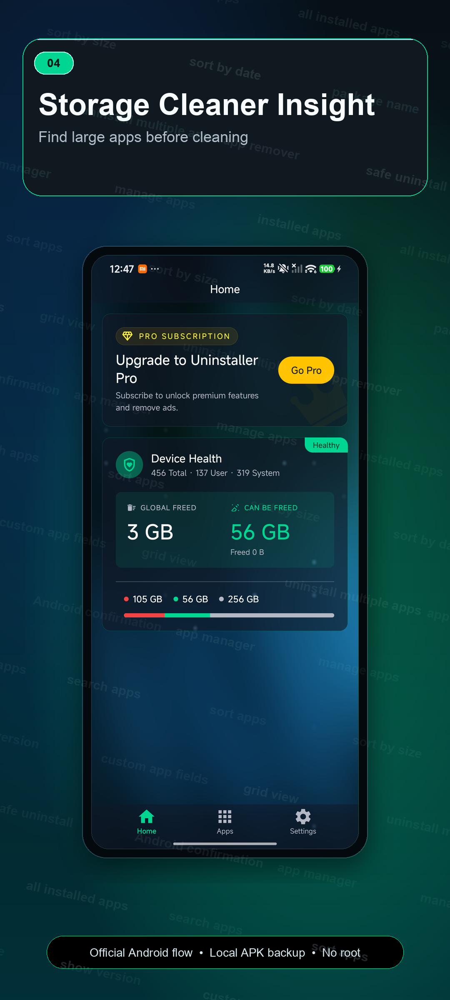
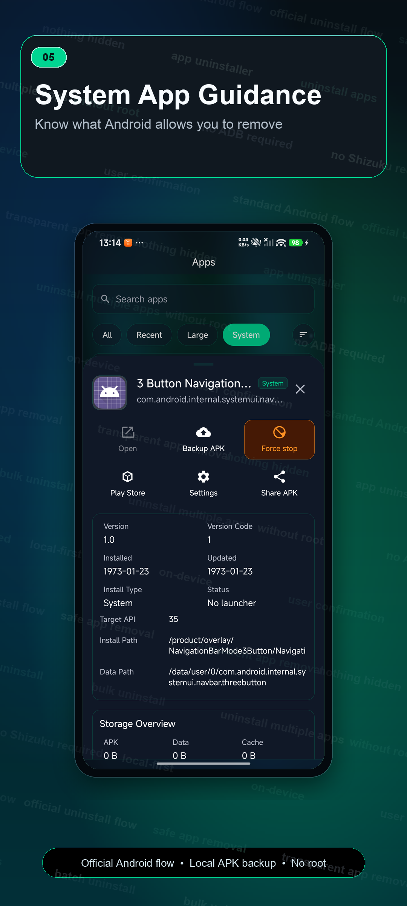

Batch uninstall apps
Search installed apps, select multiple apps, and manage old apps or old games from one list.
Batch uninstall apps, APK backup, app remover, and storage cleanup in the Lite Google Play package. Review apps by size and follow Android's official confirmation flow without root.
Uninstaller Lite keeps cleanup work focused: find apps, compare app size, back up APK files, and remove what you no longer need through Android's standard flow.
Search installed apps, select multiple apps, and manage old apps or old games from one list.
Review selected apps, then let Android handle the official uninstall confirmation.
Back up APK installers locally, save APK files, share APK files, install backups, or delete archives.
Sort apps by size, find large apps, and understand phone storage before uninstalling.
Browse package name, version, install date, update date, user app labels, and system app labels.
System and pre-installed apps are marked clearly and open Android App Info when direct removal is restricted.
Uninstaller is designed for clear review and local-first processing. It does not bypass Android confirmation, request root access, or change protected system areas.
The interface focuses on scanning installed apps, comparing storage impact, reviewing app details, backing up APK files, and confirming uninstall actions.





The workflow is built around review, backup, and Android's standard uninstall process.
Search, filter, and select apps you no longer need.
Check size, version, install date, package name, and app labels.
Save APK installers locally before cleanup when you want a backup.
Android shows the official confirmation prompt before removal.
Clear boundaries matter for Android cleanup tools. These answers explain what Uninstaller does and what Android controls.
No. Uninstaller works without root and follows Android's standard uninstall confirmation flow.
System and pre-installed apps are marked clearly. When Android blocks direct removal, Uninstaller opens Android App Info instead.
APK backup saves app installer files locally before cleanup, so you can keep, share, install, or delete archived APK files.
App lists, APK backups, and cleanup actions stay on your device unless you choose to share an APK backup file.
Uninstaller Lite is a separate Google Play package for the Lite listing. It keeps the same app cleanup workflow: batch uninstall, APK backup, app remover, storage cleanup, no root, and Android confirmation.
Review selected apps, storage size, install date, and whether you want an APK backup before Android confirmation appears.
This page includes the shared policy-safe AppUninstaller keyword research pool for com.hello.uninstaller.lite: 74 recommended English phrases, 258 expanded English phrases, and 298 localized candidates for app uninstaller, app remover, batch uninstall, APK backup, storage cleanup, app manager, no root, and Android confirmation discovery.
uninstall apps, app remover, batch uninstall, bulk uninstall, uninstall multiple apps, remove apps, delete apps, easy uninstaller, fast app uninstaller, app uninstaller, uninstall tool, app uninstall tool, remove unwanted apps, delete unused apps, unused apps, unnecessary apps, old apps, old games, unused tools, duplicate apps, installed apps, all installed apps, manage installed apps, app manager, app management, manage apps, one clean list, search apps, find apps quickly, search app by name, search and filter, sort apps, sort by size, sort by name, sort by date, app size, large apps, big apps, space-consuming apps, storage overview, storage insight, free up storage, free storage space, clean up storage, save storage space, low on storage, phone storage, keep phone organized, phone clean, clutter-free phone, daily cleanup, app cleanup, APK backup, extract APK, save APKs, share APK, app details, application info, user app labels, system app labels, Android confirmation, official uninstall flow, built-in uninstall process, standard uninstall flow, user confirmation, no root, no permissions, safe uninstall, safe app removal, transparent app removal, lightweight experience, simple interface, dark mode, grid view
uninstall app, uninstall application, remove application, delete application, app delete, app removal, application remover, application uninstaller, phone app uninstaller, android uninstaller, android app uninstaller, mobile app uninstaller, uninstaller app, uninstaller tool, remove installed apps, delete installed apps, uninstall installed apps, remove user apps, delete user apps, uninstall user apps, clean unused apps, remove unused apps, clean unwanted apps, delete unwanted apps, remove old apps, delete old apps, uninstall old apps, clean old games, delete old games, uninstall old games
batch app uninstall, bulk app remover, bulk app removal, multiple app remover, multi app uninstall, multi app remover, mass uninstall, mass app uninstall, mass app remover, select apps to uninstall, select multiple apps, remove multiple apps, delete multiple apps, bulk delete apps, batch delete apps, batch remove apps, quick batch uninstall, fast bulk uninstall, uninstall apps in batch, uninstall many apps, remove many apps, delete many apps, multi-select uninstall, checked apps uninstall, selected apps uninstall, cleanup selected apps
storage cleanup, storage manager, phone storage cleanup, android storage cleanup, storage usage, storage usage view, storage usage analyzer, app storage usage, application storage usage, storage by app, apps by size, largest apps, find large apps, find big apps, find storage hogs, storage hog apps, free phone space, free up phone space, recover storage space, reclaim storage, reclaim phone storage, clear storage space, make room on phone, clean phone storage, declutter phone, declutter apps, clean app list, app clutter, phone clutter, low storage helper, space saver, storage saver, storage cleanup tool
backup APK, APK extractor app, extract APK files, export APK, export APK files, save APK file, save app APK, backup app APK, create APK backup, local APK backup, APK saver, APK manager, APK file backup, APK share, share APK files, send APK, copy APK, keep APK backup, backup before uninstall, save before uninstall, restore APK, install from APK, APK archive, package backup, package extractor, installer backup, app installer backup, offline APK backup, safe APK backup
app list, installed app list, application list, app inventory, phone app list, view installed apps, browse installed apps, filter apps, filter installed apps, app filter, quick app search, instant app search, search installed apps, find installed apps, find app by package, package name, package name view, show package name, show app path, show install date, show update date, show version, app version, app source, sort installed apps, sort by install date, sort by update date, sort by package name, sort by version, sort by source, custom app fields, app field display, grid app list, compact app list
safe removal, safe app cleanup, manual confirmation, confirm before uninstall, review before uninstall, risk reminder, uninstall confirmation, Android uninstall dialog, system uninstall dialog, standard Android flow, Android safe flow, no root required, without root, no ADB required, without ADB, no Shizuku required, without Shizuku, local processing, local-first, on-device, private by design, clear permissions, permission clarity, transparent permissions, user controlled, you stay in control, nothing hidden, no silent removal, visible actions, safe cleanup flow
app info, open app info, Android app info, app details page, app permissions, app storage details, app install source, user apps, system apps, system app info, system app guidance, restricted apps, protected apps, built-in apps, preinstalled app info, disabled apps, app category, app label, package label, version code, version name, install path, data path, source path, launcher apps, non-launcher apps
lightweight app manager, minimal uninstaller, simple app manager, clean interface, simple cleanup, quick cleanup, clean UI, easy app management, easy app cleanup, smart app list, organized apps, tidy phone, tidy app list, less clutter, clean phone apps, one place for apps, all apps in one place, dark theme, AMOLED friendly, small app, fast loading, low friction, clear layout, focus mode, simple controls
uninstall apps without root, batch uninstall without root, backup APK before uninstall, remove unused apps safely, delete unused apps safely, find apps taking space, find large apps quickly, sort apps by size, sort apps by install date, search apps by name, manage installed apps safely, clean up old apps, remove old games, delete apps you don't use, free storage by removing apps, backup APKs locally, share APK after backup, review apps before uninstall, confirm every uninstall, Android asks before uninstall, no hidden background uninstall, safe app cleaner for Android, simple uninstaller for Android, app manager with APK backup, storage cleanup with app list
应用卸载, 批量卸载, 卸载应用, 删除应用, 应用清理, 安装包备份, 安装包备份, 应用管理, 存储清理, 释放空间, 无需系统权限, 安全卸载, 按大小排序, 查找大应用, 不用的应用, 旧应用清理, 手机空间, 本地处理, 系统应用提示, 安卓确认卸载
應用程式卸載, 批量卸載, 移除應用, 刪除應用, 應用清理, 安裝包備份, 安裝包備份, 應用管理, 儲存空間清理, 釋放空間, 免系統權限, 安全卸載, 依大小排序, 找出大型應用, 未使用應用, 舊應用清理, 手機空間, 本機處理, 系統應用提示, 安卓確認卸載
アプリ削除, アプリ アンインストール, 一括アンインストール, 不要アプリ削除, インストーラ保存, インストーラ抽出, アプリ管理, ストレージ整理, 容量を空ける, ルート不要, 安全に削除, サイズ順, 大きいアプリ, 使わないアプリ, 古いアプリ, 端末容量, ローカル処理, システムアプリ表示, アンドロイド確認, アプリ情報
desinstalar apps, desinstalador de apps, eliminar apps, borrar apps, desinstalación por lotes, copia APK, extraer APK, gestor de apps, limpiar almacenamiento, liberar espacio, sin root, desinstalación segura, ordenar por tamaño, apps grandes, apps sin usar, apps antiguas, espacio del teléfono, procesamiento local, confirmación Android, información de apps
desinstalar apps, desinstalador de apps, remover apps, apagar apps, desinstalação em lote, backup de APK, extrair APK, gerenciador de apps, limpar armazenamento, liberar espaço, sem root, remoção segura, ordenar por tamanho, apps grandes, apps não usados, apps antigos, espaço do celular, processamento local, confirmação Android, informações do app
ऐप अनइंस्टॉल, ऐप हटाएं, एक साथ ऐप हटाएं, एपीके बैकअप, एपीके निकालें, ऐप मैनेजर, स्टोरेज साफ करें, स्पेस खाली करें, बिना रूट, सुरक्षित अनइंस्टॉल, साइज के अनुसार, बड़े ऐप, अनयूज्ड ऐप, पुराने ऐप, फोन स्टोरेज, लोकल प्रोसेसिंग, एंड्रॉइड पुष्टि, ऐप जानकारी
uninstall aplikasi, hapus aplikasi, hapus banyak aplikasi, backup APK, ekstrak APK, manajer aplikasi, bersihkan penyimpanan, kosongkan ruang, tanpa root, hapus dengan aman, urutkan ukuran, aplikasi besar, aplikasi tidak terpakai, aplikasi lama, penyimpanan ponsel, proses lokal, konfirmasi Android, info aplikasi
إزالة التطبيقات, حذف التطبيقات, إزالة عدة تطبيقات, تنظيف التطبيقات, نسخ ملفات التطبيق, حفظ ملفات التثبيت, إدارة التطبيقات, تنظيف التخزين, تحرير المساحة, بلا جذر, إزالة آمنة, ترتيب حسب الحجم, تطبيقات كبيرة, تطبيقات غير مستخدمة, تطبيقات قديمة, مساحة الهاتف, معالجة محلية, تأكيد أندرويد
удаление приложений, пакетное удаление, удалить приложения, очистка приложений, резервная копия APK, извлечь APK, менеджер приложений, очистка памяти, освободить место, без root, безопасное удаление, сортировка по размеру, большие приложения, неиспользуемые приложения, старые приложения, память телефона, локальная обработка, подтверждение Андроид
Apps deinstallieren, Apps entfernen, mehrere Apps entfernen, App-Bereinigung, APK-Backup, APK extrahieren, App-Manager, Speicher bereinigen, Speicher freigeben, kein Root, sicher entfernen, nach Größe sortieren, große Apps, ungenutzte Apps, alte Apps, Telefonspeicher, lokale Verarbeitung, Android-Bestätigung
désinstaller des apps, supprimer des apps, suppression en lot, nettoyage des apps, backup APK, extraire APK, gestionnaire d'apps, nettoyer le stockage, libérer de l'espace, sans root, suppression sûre, trier par taille, apps volumineuses, apps inutilisées, anciennes apps, stockage du téléphone, traitement local, confirmation Android
gỡ ứng dụng, xóa ứng dụng, gỡ nhiều ứng dụng, dọn ứng dụng, sao lưu APK, trích xuất APK, quản lý ứng dụng, dọn bộ nhớ, giải phóng dung lượng, không root, gỡ an toàn, sắp xếp theo dung lượng, ứng dụng lớn, ứng dụng không dùng, ứng dụng cũ, bộ nhớ điện thoại, xử lý cục bộ, xác nhận Android
앱 제거, 앱 삭제, 앱 일괄 제거, 앱 정리, 설치 파일 백업, 설치 파일 추출, 앱 관리자, 저장공간 정리, 공간 확보, 루트 필요 없음, 안전한 제거, 크기순 정렬, 큰 앱, 사용하지 않는 앱, 오래된 앱, 휴대폰 저장공간, 로컬 처리, 안드로이드 확인
uygulama kaldır, uygulama sil, toplu uygulama kaldırma, uygulama temizliği, APK yedeği, APK çıkar, uygulama yöneticisi, depolama temizliği, alan aç, root yok, güvenli kaldırma, boyuta göre sırala, büyük uygulamalar, kullanılmayan uygulamalar, eski uygulamalar, telefon depolaması, yerel işlem, Android onayı
অ্যাপ সরান, অ্যাপ মুছুন, একসাথে অ্যাপ সরান, অ্যাপ পরিষ্কার, ব্যাকআপ রাখুন, ইনস্টলার সংরক্ষণ, অ্যাপ ম্যানেজার, স্টোরেজ পরিষ্কার, জায়গা খালি করুন, রুট ছাড়া, নিরাপদ অপসারণ, আকার অনুযায়ী সাজান, বড় অ্যাপ, অব্যবহৃত অ্যাপ, পুরোনো অ্যাপ, ফোন স্টোরেজ, স্থানীয় প্রক্রিয়া, অ্যান্ড্রয়েড নিশ্চিতকরণ
ਐਪ ਹਟਾਓ, ਐਪ ਮਿਟਾਓ, ਕਈ ਐਪ ਇਕੱਠੇ ਹਟਾਓ, ਐਪ ਸਫਾਈ, ਬੈਕਅੱਪ ਰੱਖੋ, ਇੰਸਟਾਲਰ ਸੰਭਾਲੋ, ਐਪ ਮੈਨੇਜਰ, ਸਟੋਰੇਜ ਸਫਾਈ, ਸਟੋਰੇਜ ਖਾਲੀ ਕਰੋ, ਰੂਟ ਨਹੀਂ, ਸੁਰੱਖਿਅਤ ਹਟਾਉਣਾ, ਆਕਾਰ ਅਨੁਸਾਰ ਛਾਂਟੋ, ਵੱਡੀਆਂ ਐਪ, ਨਾ ਵਰਤੀਆਂ ਐਪ, ਪੁਰਾਣੀਆਂ ਐਪ, ਫੋਨ ਸਟੋਰੇਜ, ਸਥਾਨਕ ਪ੍ਰਕਿਰਿਆ, ਐਂਡਰਾਇਡ ਪੁਸ਼ਟੀ
Use Uninstaller Lite for batch uninstall, app remover tools, APK backup, storage cleanup, app manager details, and no-root review before removal.